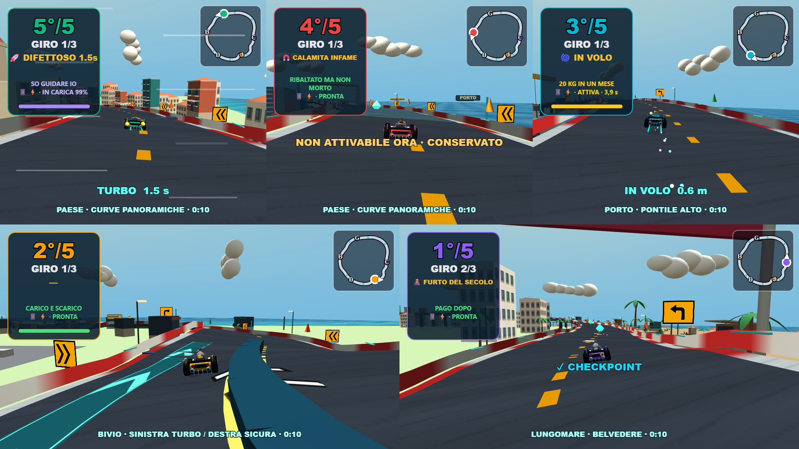
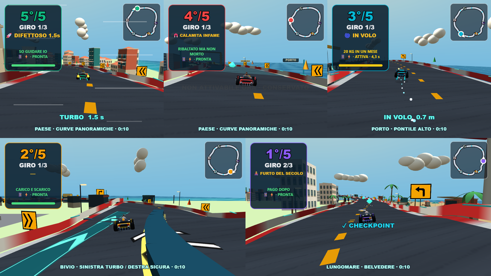

Ribaltati · Litorale più fluido
Caricamento dei piloti completato prima del countdown, ruote in un solo passaggio grafico e meno upload delle minimappe. Guida e camere restano aggiornate a ogni fotogramma.
44,15 → 57,67 FPS nel confronto locale a cinque visuali, HIGH, Full HD, scala 1, RTX 3050. Campioni di sei secondi; i risultati dipendono dal dispositivo e dal punto della gara.

Dopo: stessa risoluzione e stessa geometria della scena.
Prima: testi e minimappe caricati ogni fotogramma e ruote con passaggi separati.Apri il gioco · Intervento e verifiche · Risultati